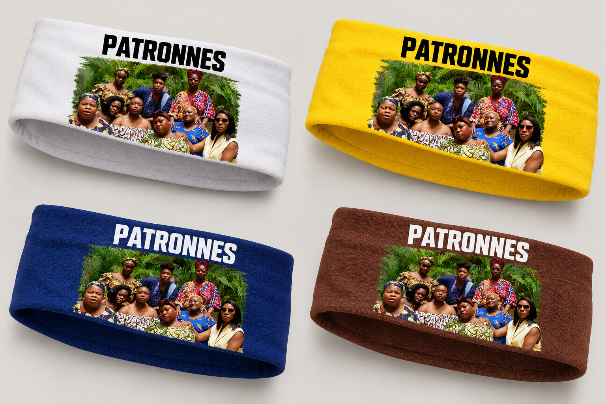

Édition 01
Les Patronnes

Quatre coloris
Premier drop
Le bandeau
Les Patronnes
Un accessoire souple, imaginé pour porter les couleurs du collectif au quotidien. Chaque bandeau rassemble les visages et l’énergie qui font vivre Les Patronnes.
Choisir un coloris Blanc, jaune, bleu ou brun
- Coupe
- Bandeau souple et confortable
- Matière
- Jersey doux
- Finition
- Impression frontale
- Taille
- Unique, extensible
DisponibilitéPrécommande bientôt
Être informé·e du lancement Retrait à Cotonou et livraison à venir. Les bénéfices participent au rayonnement du projet Les Patronnes.